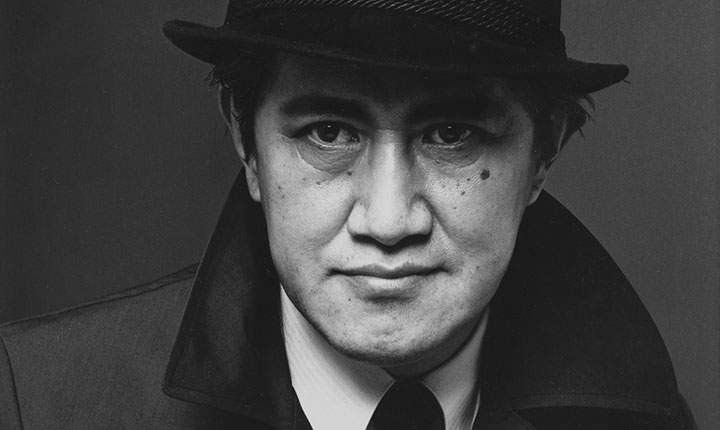

- 木心美术馆致力于纪念和展示画家、文学家、诗人木心先生（1927-2011）的毕生心血与美学遗产。这不仅是一座收藏过去时的美术馆，而且是向未来开放的精神指向和学术空间。美术馆坐落于木心的故乡乌镇，为木心的研究提供了完整的文献。
- 木心美术馆由贝聿铭弟子、纽约OLI事务所冈本博、林兵设计督造，由文化乌镇股份有限公司出资，巨匠建设集团有限公司施工，全程历时四年；
馆内室内设计由OLI建筑设计事务所法比安主持，为期一年半。全馆建筑坐北朝南，以修长的、高度现代的极简造型，跨越乌镇元宝湖水面，与水中倒影相伴随，成为乌镇西栅一道宁静而清俊的风景线。

- 木心（1927-2011）， 画家，文学家、诗人。原名孙璞，乌镇人，自幼酷爱绘画、文学，习练钢琴和谱曲。12岁写诗，16岁在当地报刊发表散文。
- 1982年木心移居纽约。重启绘画与写作，分别在海峡两岸先后出版诗集、文集三十余种。同期，作画不辍。2001年，耶鲁大学美术馆为其举办大型个展，并巡回芝加哥美术馆、夏威夷美术馆、纽约亚洲协会美术馆。
- 新世纪，应家乡乌镇竭诚邀请，于2006年回乡定居。2011年逝世。 同年，乌镇为之起建“木心美术馆”。